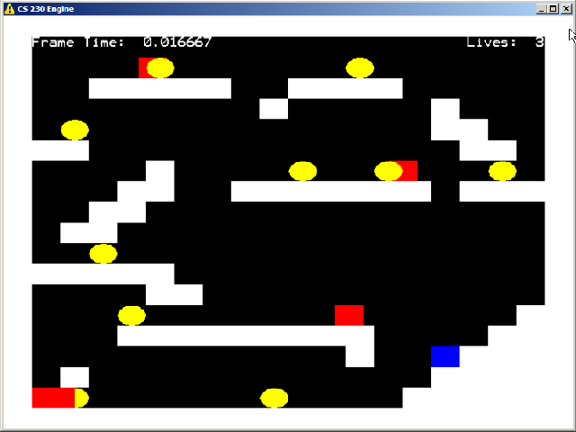
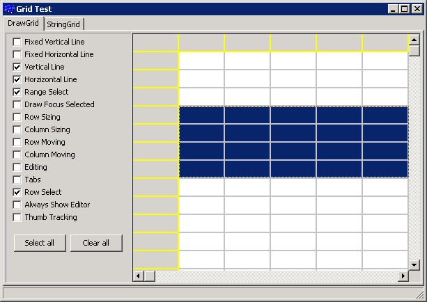
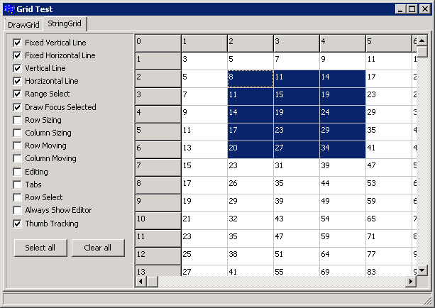
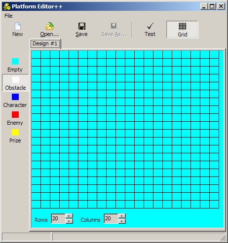
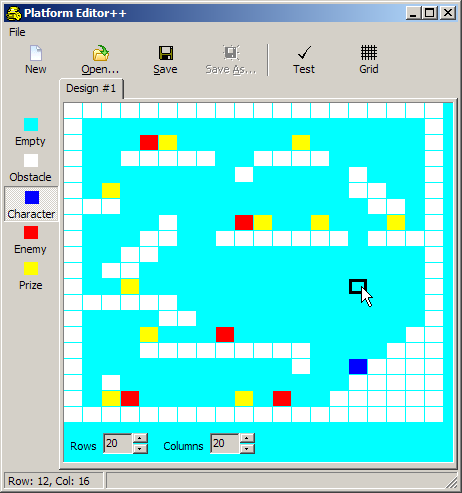

Session 4
Creating a tile-based editor for a platform game
(Grids, check buttons, WinExec, handling draw events)
The session dealt with implementing a tile-based editor for a platform game. The platform game was actually from
a CS230 course at Digipen. This is a screen shot of that game:
| The game in action | | The data file used |
|---|
|

|
|
Width 20
Height 20
1 1 1 1 1 1 1 1 1 1 1 1 1 1 1 1 1 1 1 1
1 0 4 3 0 0 0 0 0 4 0 3 0 0 1 1 1 1 1 1
1 0 1 0 0 0 0 0 0 0 0 0 0 0 0 1 1 1 1 1
1 0 0 0 0 0 0 0 0 0 0 0 1 0 0 0 1 1 1 1
1 0 0 0 1 1 1 1 1 1 1 1 1 0 0 2 0 1 1 1
1 0 0 0 4 0 0 0 3 0 0 0 0 0 0 0 0 0 1 1
1 0 0 0 0 1 1 0 0 0 0 0 0 0 0 0 0 0 0 1
1 1 1 1 1 1 0 0 0 0 0 0 0 0 0 0 0 0 0 1
1 0 0 4 0 0 0 0 0 0 0 0 0 0 0 0 0 0 0 1
1 0 1 1 0 0 0 0 0 0 0 0 0 0 0 0 0 0 0 1
1 0 0 1 1 0 0 0 0 0 0 0 0 0 0 0 0 0 0 1
1 0 0 0 1 1 0 0 1 1 1 1 1 1 1 0 1 1 1 1
1 0 0 0 0 1 0 0 0 3 4 0 0 4 0 0 0 4 0 1
1 1 1 0 0 0 0 0 0 0 0 0 0 0 0 0 1 1 0 1
1 0 4 0 0 0 0 0 0 0 0 0 0 0 0 1 1 0 0 1
1 0 0 0 0 0 0 0 0 1 0 0 0 0 0 1 0 0 0 1
1 0 0 1 1 1 1 1 0 0 1 1 1 1 0 0 0 0 0 1
1 0 0 0 3 4 0 0 0 0 0 0 4 0 0 0 0 0 0 1
1 0 0 0 0 0 0 0 0 0 0 0 0 0 0 0 0 0 0 1
1 1 1 1 1 1 1 1 1 1 1 1 1 1 1 1 1 1 1 1
|
This tool is by no means complete, but it is a good starting point. The primary focus of this lecture was to introduce the drawing
grid components (TDrawGrid and TStringGrid). These components are very powerful and can bring a lot of power with minimal cost.
This is a very small program that just demonstrates some of the properties of the TDrawGrid and TStringGrid components. You should look
at the properties in the Object Inspector in the IDE. Modify some of them and see how it changes the behavior. Specifically, modify
these properties:
- ColCount, RowCount - The number of columns and rows
- DefaultColWidth, DefaultRowWidth - The default settings for these properties
- FixedCols, FixedRows - The "non-cell" portion of the grid
- GridLineWidth - The, well, width of the grid lines
- Options:
- Toggle the checkboxes to see how these affect the grid.
- You can resize and move the rows/columns, perform inline editing (string grid), range select, etc.
- Just play around with it to get the idea of how the options affect the grids.
- Although the two sets of checkboxes look identical, they were created in different ways:
- The checkboxes for the DrawGrid were create at runtime.
- The checkboxes for the StringGrid were create at design time.
- Often times, it can be tedious to create many very similar components at design time. Creating them
at runtime requires more code (since you are not using the designer to layout things), but may actually
end up shortening the overall development time.
- Look at the source code and the form at design-time and see the difference. You will definitely want
to be able to create, layout, and manipulate visible components at runtime.
| The draw grid | | The string grid |
|---|
|

|
|

|
- Project files (Turbo C++) (XE 3) - Everything to build the project.
Executable - If you want to try it out immediately.
- Random walk project (Turbo C++) (XE 3).
This is another GUI that uses the TDrawGrid component. It's the GUI for
the "Drunk man on a pier" program that you may remember from CS120. Warning: It's not very well commented as it was just thrown
together for an old "CS 120 Friday Lecture Series" that I used to give. (Yeah, I'm always doing some kind of
"extra lecture" series about something...) Still, you should be able to easily follow it by now.
Executable - If you want to try it out immediately.
- WarBoats project (Turbo C++) (XE 3) You will need to provide your own Ocean.h and Ocean.cpp from the CS170 assignment.
Executable - If you want to try it out immediately.
This is the "platform editor" that was presented during the session:
| The empty editor | | The completed "level" |
|---|
|

|
|

|
Be sure to read the comments in the .cpp file. They should explain most of what is going on.
- MainForm.h - The definition of the main form.
- MainForm.cpp - The implementation.
- Project files (Turbo C++) (XE 3) - Includes the images to build the application. The archive includes a folder named Debug_Build
that contains some sample data files (Exported?.txt) and the CS230 platform game executable
(and the required DirectX DLL).
Executable - If you want to try it out immediately.